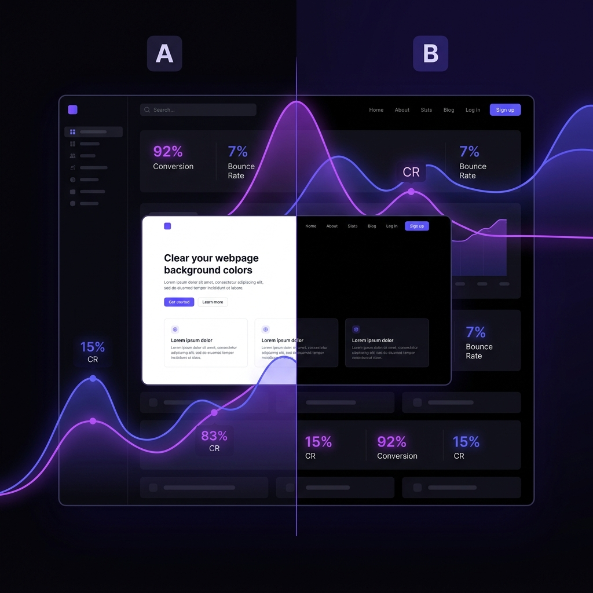

Hi, I'm Tanay Jujarao
Data Analyst building automated, production-grade data pipelines & executive dashboards.
Transitioning into Analytics Engineering. Specializing in transforming raw multi-source data into clean Medallion architecture models using Snowflake, dbt, Airflow, SQL, and Python, paired with high-impact Tableau & Power BI visual reporting.

Tanay Jujarao
Analytics Engineering Nanded, Maharashtra, IndiaTurning Messy Multi-Source Data into Quantified Outcomes
I am a Data Analyst transitioning into Analytics Engineering with a deep passion for modern data stack tooling. My work sits at the intersection of robust data transformation (dbt Core, Snowflake, Apache Airflow), statistical experimentation (A/B testing, hypothesis testing), and executive visualization (Tableau, Power BI).
Whether it's building Bronze/Silver/Gold layered architectures to automate retail analytics or conducting cohort analyses that recover $853K in annual churn revenue, I focus on building reliable, self-service data systems that drive real dollars.
Technical Expertise & Toolset
Grouped across data engineering, statistical inference, visualization, and cloud tooling.
Languages & Querying
Data Engineering
Analysis & Statistics
BI & Visualization
Libraries & ML
Workflow & Tools
Featured Projects
Highlighting end-to-end data pipelines, statistical experimental design, and quantified financial impact.
Zomato Batch Data Pipeline — S3 → Snowflake → dbt → Airflow 3
Production-style batch ELT pipeline processing 10M+ orders, 23M+ items, and 300K reviews from S3 data lake through Snowflake medallion layers, fully orchestrated daily via Airflow 3 on Docker.
- Architected a daily batch pipeline pulling 7 raw CSV tables (~2.3 GB) from AWS S3 into Snowflake via keyless IAM Storage Integrations and
COPY INTObulk loading. - Built a Medallion Architecture (Bronze RAW → Silver STAGING → Gold MARTS) in dbt Core with incremental
MERGEmaterializations for 10M+ fact rows, SCD Type 2 snapshots, and custom Jinja schema macros. - Orchestrated end-to-end execution using Apache Airflow 3 on Docker (isolated venvs +
SQLExecuteQueryOperator+BashOperator) with 100% automated dbt testing and zero credential leaks.
Airbnb Data Engineering Pipeline — S3 → Snowflake → dbt Core
End-to-end cloud pipeline ingesting raw Airbnb data from AWS S3 into Snowflake and transforming it through Medallion architecture (Bronze → Silver → Gold) using dbt Core.
- Configured AWS S3 cloud ingestion and Snowflake external stages to load raw multi-entity Airbnb datasets (hosts, listings, bookings) into Snowflake source tables.
- Built Bronze, Silver, and Gold layer models in dbt Core using incremental
MERGEmaterializations, One Big Table (OBT) analytics marts, and reusable Jinja macros (multiply,trimmer). - Enforced strict data quality via dbt test suites (
unique,not_null,accepted_values) and tracked historical dimensional changes using dbt snapshots (SCD Type 2).

Strategic Customer Churn Mitigation & ROI Modeling
Multi-source statistical cohort analysis identifying customer revenue loss drivers and delivering a $270K targeted intervention strategy.
- Analyzed multi-source data across 8K customers and 34K orders using advanced SQL and cohort modeling; identified a "Support Death Spiral" where 33% of churning customers drove 67% ($2.1M) of total revenue loss.
- Built an interactive Tableau dashboard with LOD expressions surfacing a critical 14-day customer activation window.
- Proposed a $270K intervention campaign delivering 3.16x ROI and $853K annual revenue recovery.
Other Selected Projects
Statistical experimentation, executive BI dashboards, and sports analytics.

A/B Testing Analysis — Website Background
Statistical experiment on ~5,000 sessions using Two-Proportion Z-Tests and Welch's t-tests, validating a +160.5% conversion lift (p < 0.001).

Classic Model Cars — Sales Dashboard
Transformed 8 relational tables into a Power BI star-schema data model with DAX measures, surfacing $9.6M in sales and 39.8% profit margin.

IPL Crunch — Cricket Analytics
Interactive Python & Streamlit analytics application performing deep-dive exploratory analysis on IPL player statistics and match outcomes.
Technologies & Tools
Core platforms and frameworks powering my analytics engineering workflow.


Methodologies & Approach
Principles that guide how I build reliable, production-grade analytics systems.
Medallion ELT Architecture
Structuring data transforms into Bronze (raw), Silver (cleansed & tested), and Gold (analytics marts) layers using dbt Core and Snowflake.
Statistical Rigor & Testing
Evaluating business experiments with hypothesis testing, Two-Proportion Z-Tests, Chi-Square randomization checks, and Welch's t-tests.
Dollar-Value ROI Modeling
Translating customer churn and order patterns into direct financial revenue outcomes, intervention payback, and ROI calculations.
Executive-Ready BI
Designing star-schema data models, custom DAX measures, and LOD expressions in Power BI & Tableau for instant stakeholder clarity.
Certifications
Data Analytics Job Simulation
Industry analytics workflow, reporting automation, and stakeholder communication.
View Certificate ↗Python for Data Science
Python, Pandas, NumPy, data manipulation, cleaning, and visualization.
View Certificate ↗GenAI Powered Data Analytics Simulation
AI-assisted analysis, prompt engineering, and business problem-solving.
View Certificate ↗Intermediate Machine Learning
XGBoost, Scikit-Learn Pipelines, target encoding, and cross-validation.
View Certificate ↗Education
Bachelor of Computer Application (BCA)
Focusing on computer science fundamentals, data structures, relational database management systems (RDBMS), SQL query optimization, and software development methodologies.
Nanded, Maharashtra, India
Let's Build Data Systems Together
Open to Data Analyst, Junior Analytics Engineer, and Data Engineering roles. Let's connect to discuss how I can help build your data pipelines and dashboards.